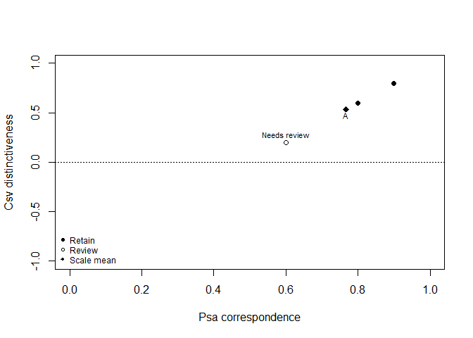
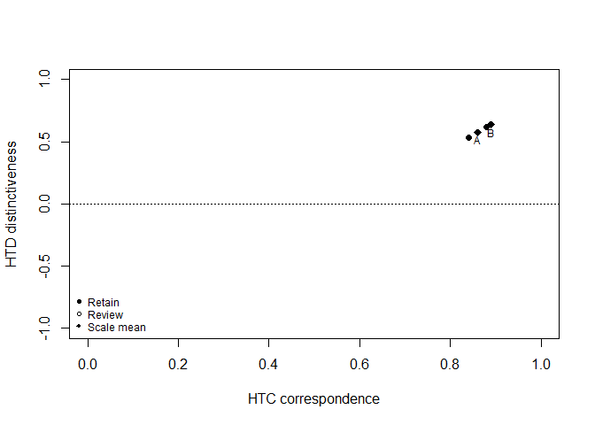
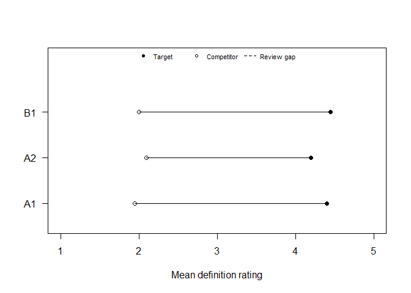
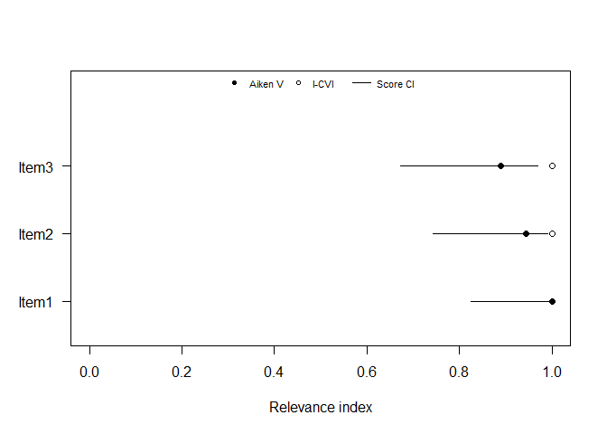
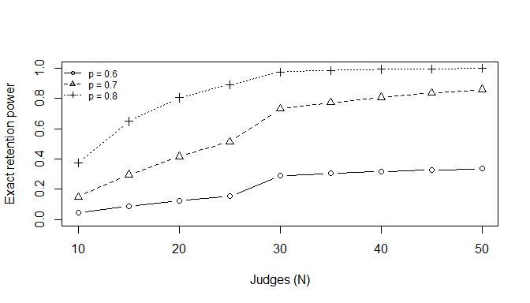

contentvalidR provides quantitative tools for substantive and content-oriented scale pretesting. The package is being developed around three complementary workflows:
- Item sorting — Anderson & Gerbing (1991) Psa/Csv, exact item-level inference following Howard & Melloy (2016), and scale-level empirical norms from Colquitt et al. (2019).
- Construct ratings — Hinkin & Tracey (1999) fully crossed ratings, HTC/HTD, Greenhouse-Geisser-aware repeated-measures item screening, and Colquitt et al. (2019) scale-level norms.
- Expert panels — Aiken’s V, Lawshe CVR, CVI/modified kappa, and item-objective congruence.
The design goal is interpretable output rather than coefficient dumps. Recommended workflow functions summarize what the evidence supports, flag items that need attention, and distinguish statistical screening from substantive decisions.
Quantitative content-validity statistics are one part of a broader validity argument. They complement, rather than replace, construct definition, domain coverage, qualitative expert feedback, cognitive interviewing, and other evidence about relevance, comprehensiveness, and comprehensibility.
One workflow API
The three recommended workflows now share a stable object contract. A fitted sort_validity(), rating_validity(), or expert_validity() object always contains:
-
results— item/result-level evidence; -
scale_summary— target-scale or panel-level evidence; -
settings— analysis choices; -
design— sample-size, missingness, and design metadata; and -
details— method-specific supporting results.
Every results table also includes a common status field with the restrained categories Supported, Review, Insufficient data, or Descriptive only. Method-specific recommendation wording is retained alongside it—for example, item-sort and construct-rating workflows still use Retain when their full statistical screening criterion is met. This keeps the methods faithful to their evidentiary role while making programmatic use consistent across workflows.
summary() uses the same common count fields across all three workflows, and print()/plot() retain method-appropriate displays. Compatibility aliases such as rating_fit$contrasts and expert_fit$scale remain available for code written before v0.0.6.
Installation
# install.packages("remotes")
remotes::install_github("JUhalt/contentvalidR")Recommended item-sort workflow
library(contentvalidR)
sort_dat <- data.frame(
item = rep(c("Clear 1", "Clear 2", "Needs review"), each = 20),
rater = rep(1:20, 3),
target_construct = "A",
assigned_construct = c(
rep("A", 18), rep("B", 2),
rep("A", 16), rep("B", 4),
rep("A", 12), rep("B", 8)
)
)
fit <- sort_validity(sort_dat)
fit
#> contentvalidR item-sort analysis
#> --------------------------------
#> Items: 3 | Raters: 20 | Target scales: 1
#> Item inference: Howard-Melloy exact target-count test (p0 = 0.50, alpha = 0.050)
#> Judges: naive
#>
#> 2 item(s) meet the exact target-assignment criterion; 1 item(s) are flagged for review.
#> Review: Needs review
#>
#> Item-level evidence:
#> item target n n_target competitor psa csv p_value recommendation
#> Clear 1 A 20 18 B 0.9 0.8 0.000 Retain
#> Clear 2 A 20 16 B 0.8 0.6 0.006 Retain
#> Needs review A 20 12 B 0.6 0.2 0.252 Review
#>
#> Scale-level Colquitt benchmark summary:
#> target n_items mean_psa psa_strength mean_csv csv_strength
#> A 3 0.767 Moderate 0.533 Moderate
#> benchmark_set
#> Overall (not correlation-normed)
#>
#> Colquitt labels are empirical percentile norms derived from scale-level averages,
#> not universal cutoffs or automatic scale-retention rules.
#> 'Review' is not an automatic deletion decision. Use theory, construct-domain coverage,
#> item wording, and qualitative judge feedback alongside these statistics.
summary(fit)
#> Summary of item-sort content-validity evidence
#> -------------------------------------------
#> Retain: 2 of 3 item(s)
#> Review: 1 of 3 item(s)
#>
#> Target-scale evidence:
#> target n_items n_retain n_review mean_psa psa_strength mean_csv csv_strength
#> A 3 2 1 0.767 Moderate 0.533 Moderate
#> overall_strength
#> Moderate
#>
#> A: Generally supportive normative standing, with at least one dimension in the moderate range; review weaker items before finalizing.
#>
#> Items needing attention:
#> item target competitor psa csv p_value
#> Needs review A B 0.6 0.2 0.252
#> issue recommendation
#> Target favored, exact criterion not met Review
#>
#> Interpret scale norms and item flags alongside theory, domain coverage, and qualitative feedback.
#> This analysis does not by itself establish comprehensiveness or the full content-validity argument.The workflow deliberately separates two levels of evidence:
- Item level: Psa/Csv plus the exact Howard-Melloy target-count rule produce Retain, Review, or Insufficient data flags. The output also names the strongest competing construct so a weak item is diagnostically useful rather than just “non-significant.”
- Target-scale level: Psa and Csv are averaged across the target scale’s items and interpreted using Colquitt et al. (2019)’s empirical percentile norms for definitional correspondence and distinctiveness. This matches how those norms were constructed.
Review deliberately does not mean automatic deletion. Likewise, Colquitt categories such as Strong or Moderate are empirical normative standing, not universal pass/fail cutoffs.
Correlation-conditional Colquitt norms
If substantive data provide the average correlation between a focal scale and its orbiting scales, the workflow can select Colquitt et al.’s correlation-conditional norm set:
sort_validity(sort_dat, orbiting_r = .42)$scale_summary
#> target n_items n_items_usable n_retain n_review mean_psa psa_strength
#> 1 A 3 3 2 1 0.7666667 Moderate
#> mean_csv csv_strength orbiting_r
#> 1 0.5333333 Moderate 0.42
#> benchmark_set benchmark_applicable
#> 1 More moderate focal-orbiting correlation (.35-.50) TRUE
#> overall_strength
#> 1 Moderate
#> evidence
#> 1 Generally supportive normative standing, with at least one dimension in the moderate range; review weaker items before finalizing.
colquitt_benchmarks("csv", orbiting_r = .42)
#> statistic benchmark_set benchmark_label
#> 1 csv moderate More moderate focal-orbiting correlation (.35-.50)
#> 2 csv moderate More moderate focal-orbiting correlation (.35-.50)
#> 3 csv moderate More moderate focal-orbiting correlation (.35-.50)
#> 4 csv moderate More moderate focal-orbiting correlation (.35-.50)
#> 5 csv moderate More moderate focal-orbiting correlation (.35-.50)
#> interpretation percentile minimum
#> 1 Very Strong 80th-99th 0.83
#> 2 Strong 60th-79th 0.61
#> 3 Moderate 40th-59th 0.52
#> 4 Weak 20th-39th 0.01
#> 5 Lack of 0th-19th -InfThe published norms were developed with naive judges representative of the target population. If the sort used expert judges, declare that explicitly; the package will suppress Colquitt labels rather than apply an unsupported benchmark:
sort_validity(sort_dat, judge_type = "expert")$scale_summary
#> target n_items n_items_usable n_retain n_review mean_psa psa_strength
#> 1 A 3 3 2 1 0.7666667 <NA>
#> mean_csv csv_strength orbiting_r benchmark_set
#> 1 0.5333333 <NA> NA Overall (not correlation-normed)
#> benchmark_applicable overall_strength
#> 1 FALSE <NA>
#> evidence
#> 1 Colquitt norms not applied because this workflow was marked as using expert judges.Exact planning rather than a judge-count rule of thumb
sort_power(N = c(20, 30, 40), true_p = c(.60, .70, .80))
#> Exact item-sort planning analysis
#> ---------------------------------
#> Retention rule: p0 = 0.50, alpha = 0.050
#>
#> N true_p critical_n_target minimum_observed_psa power
#> 20 0.6 15 0.750 0.126
#> 30 0.6 20 0.667 0.291
#> 40 0.6 26 0.650 0.317
#> 20 0.7 15 0.750 0.416
#> 30 0.7 20 0.667 0.730
#> 40 0.7 26 0.650 0.807
#> 20 0.8 15 0.750 0.804
#> 30 0.8 20 0.667 0.974
#> 40 0.8 26 0.650 0.992
#>
#> Power is the exact probability of reaching the required target-assignment count
#> under the assumed true target-assignment probability.sort_power() gives the exact probability of reaching the Howard-Melloy retention count under each planned N and assumed true target-assignment probability.
Low-level statistics
Researchers who need the component statistics directly can still use:
compute_psa(sort_dat)
#> item target n_total n n_missing n_target psa
#> 1 Clear 1 A 20 20 0 18 0.9
#> 2 Clear 2 A 20 20 0 16 0.8
#> 3 Needs review A 20 20 0 12 0.6
compute_csv(sort_dat)
#> item target n_total n n_missing n_target competitor n_other_max csv
#> 1 Clear 1 A 20 20 0 18 B 2 0.8
#> 2 Clear 2 A 20 20 0 16 B 4 0.6
#> 3 Needs review A 20 20 0 12 B 8 0.2
csv_binom_test(n_c = 15, N = 20)
#> $p.value
#> [1] 0.02069473
#>
#> $estimate
#> [1] 0.75
#>
#> $conf.int
#> [1] 0.5444176 1.0000000
#> attr(,"conf.level")
#> [1] 0.95
#>
#> $critical_n_target
#> [1] 15
#>
#> $passes_chance
#> [1] TRUE
#>
#> $decision
#> [1] "significant"
#>
#> $interpretation
#> [1] "Target assignments exceed the exact chance criterion."
interpret_colquitt(.70, "csv")
#> statistic value benchmark_set benchmark_label interpretation
#> 1 csv 0.7 overall Overall (not correlation-normed) Strong
#> applicable
#> 1 TRUE
#> note
#> 1 Empirical percentile norm from scale-level averages; not a universal cutoff.Missing assignments are excluded itemwise and are reported explicitly in n_missing so the effective denominator is visible.
Recommended construct-rating workflow
In the Hinkin-Tracey design, the same judge rates each item against every construct definition. rating_validity() treats that dependence explicitly rather than analyzing the ratings as independent groups.
set.seed(12)
rating_dat <- expand.grid(
item = c("A1", "A2", "B1"),
rater = 1:20,
construct = c("A", "B", "C")
)
rating_dat$target_construct <- ifelse(rating_dat$item == "B1", "B", "A")
rating_dat$rating <- ifelse(
rating_dat$construct == rating_dat$target_construct,
pmin(5, pmax(1, round(rnorm(nrow(rating_dat), 4.4, .6)))),
pmin(5, pmax(1, round(rnorm(nrow(rating_dat), 2.1, .7))))
)
rfit <- rating_validity(rating_dat, scale_min = 1, scale_max = 5)
rfit
#> contentvalidR construct-rating analysis
#> ---------------------------------------
#> Items: 3 | Raters: 20 | Target scales: 2 | Constructs: 3
#> Design: within-judge ratings | Scale: 1 to 5
#> Item inference: one-way repeated-measures ANOVA (Greenhouse-Geisser corrected omnibus p) plus planned paired target-versus-orbiting contrasts
#> Planned-contrast adjustment: none
#> Judges: naive
#>
#> 3 item(s) meet the full item-level screening criterion; 0 item(s) are flagged for review.
#>
#> Item-level evidence:
#> item target n_complete strongest_competitor htc htd p_value max_contrast_p
#> A1 A 20 C 0.88 0.619 0 0
#> A2 A 20 B 0.84 0.531 0 0
#> B1 B 20 C 0.89 0.637 0 0
#> recommendation
#> Retain
#> Retain
#> Retain
#>
#> Target-scale Colquitt benchmark summary:
#> target n_items n_htc n_htd mean_htc htc_strength mean_htd htd_strength
#> A 2 2 2 0.86 Moderate 0.575 Very Strong
#> B 1 1 1 0.89 Strong 0.637 Very Strong
#> benchmark_set
#> overall
#> overall
#>
#> Colquitt labels are empirical percentile norms for scale-level HTC/HTD averages, not universal cutoffs.
#> 'Review' is not an automatic deletion decision. Consider construct definitions, item wording,
#> orbiting-construct choice, domain coverage, and qualitative judge feedback.
summary(rfit)
#> Summary of construct-rating content-validity evidence
#> ---------------------------------------------------
#> Retain: 3 of 3 item(s)
#> Review: 0 of 3 item(s)
#>
#> Target-scale evidence:
#> target n_items n_htc n_htd n_retain n_review mean_htc htc_strength mean_htd
#> A 2 2 2 2 0 0.86 Moderate 0.575
#> B 1 1 1 1 0 0.89 Strong 0.637
#> htd_strength overall_strength
#> Very Strong Moderate
#> Very Strong Strong
#>
#> A: Generally supportive normative standing, with at least one content-validity dimension in the moderate range; inspect weaker items and construct overlap before finalizing the scale.
#> B: Strong normative standing on the weaker of definitional correspondence (HTC) and distinctiveness (HTD).
#>
#> All analyzed items met the item-level inferential screening criterion.
#>
#> Interpret these results alongside theory, domain coverage, and qualitative feedback.
#> The analysis does not by itself establish comprehensiveness or the full content-validity argument.The workflow combines two descriptive indices with direct item-level screening:
- HTC (Hinkin-Tracey correspondence): how strongly ratings match the intended definition;
- HTD (Hinkin-Tracey distinctiveness): how much intended-definition ratings exceed orbiting-definition ratings;
- a one-way repeated-measures ANOVA for each item; and
- planned paired contrasts comparing the target definition with each orbiting definition.
As with the item-sort workflow, Retain and Review are screening labels rather than automatic editorial decisions. The output names the strongest orbiting competitor so a weak item tells the researcher where the conceptual overlap appears. Colquitt HTC/HTD labels are applied to target-scale averages, not treated as universal item-level cutoffs.
Low-level components remain available:
htc(rating_dat, scale_min = 1, scale_max = 5)
#> item target n_target target_mean anchors htc
#> 1 A1 A 20 4.40 5 0.88
#> 2 A2 A 20 4.20 5 0.84
#> 3 B1 B 20 4.45 5 0.89
htd(rating_dat, scale_min = 1, scale_max = 5)
#> item target n_complete n_pairs target_mean_complete strongest_competitor
#> 1 A1 A 20 40 4.40 C
#> 2 A2 A 20 40 4.20 B
#> 3 B1 B 20 40 4.45 C
#> competitor_mean anchors htd
#> 1 1.95 5 0.61875
#> 2 2.10 5 0.53125
#> 3 2.00 5 0.63750
anova_content(rating_dat)
#> item target design n_raters n_complete n_constructs target_mean
#> 1 A1 A within 20 20 3 4.40
#> 2 A2 A within 20 20 3 4.20
#> 3 B1 B within 20 20 3 4.45
#> strongest_competitor competitor_mean F df1 df2 p
#> 1 C 1.95 108.55245 2 38 1.941920e-16
#> 2 B 2.10 66.92593 2 38 3.531492e-13
#> 3 C 2.00 94.20683 2 38 1.873865e-15
#> epsilon_gg df1_gg df2_gg p_gg p_screen partial_eta2
#> 1 0.8571129 1.714226 32.57029 2.109513e-14 2.109513e-14 0.8510417
#> 2 0.7606524 1.521305 28.90479 1.544388e-10 1.544388e-10 0.7788793
#> 3 0.9532879 1.906576 36.22494 7.805392e-15 7.805392e-15 0.8321656
#> min_mean_diff max_contrast_p contrast_pass posthoc_pass
#> 1 2.45 4.238082e-10 TRUE TRUE
#> 2 2.10 6.543223e-08 TRUE TRUE
#> 3 2.45 2.290289e-10 TRUE TRUERecommended expert-panel workflow
Expert panels answer several different questions, so expert_validity() uses an explicit mode rather than pretending that Aiken V, CVR, CVI, and IOC are interchangeable.
Relevance: Aiken V + CVI / modified kappa
expert_ratings <- matrix(
c(4,4,4,4,4,4,
4,4,4,3,4,4,
4,3,4,4,3,4),
nrow = 6,
dimnames = list(NULL, c("Item1", "Item2", "Item3"))
)
efit <- expert_validity(
expert_ratings,
mode = "relevance",
lo = 1, hi = 4
)
efit
#> contentvalidR expert-panel analysis
#> -----------------------------------
#> Mode: relevance
#> Items: 3 | Experts/item: 6
#> Mean Aiken V: 0.944 | S-CVI/Ave: 1 | S-CVI/UA: 1
#> Strong support: 3 | Support: 0 | Review: 0
#>
#> item N V ci_low ci_high I_CVI kappa_mod recommendation
#> Item1 6 1.000 0.824 1.000 1 1 Strong support
#> Item2 6 0.944 0.742 0.990 1 1 Strong support
#> Item3 6 0.889 0.672 0.969 1 1 Strong support
#>
#> CVI thresholds shown by the workflow are common panel-size guidelines, not universal validity cutoffs.
#>
#> Use quantitative indices alongside expert comments, construct coverage, and comprehensibility review.
summary(efit)
#> Summary of expert-panel content-validity evidence
#> ---------------------------------------------
#> Mode: relevance
#> Supported: 3 | Review: 0
#> No items were flagged by the workflow's quantitative review rules.
#>
#> These summaries support, but do not replace, qualitative content review.Relevance mode reports Aiken’s V with the Penfield-Giacobbi score confidence interval, I-CVI, Polit-Beck-Owen modified kappa, S-CVI/Ave, and S-CVI/UA. The workflow displays common panel-size CVI guidelines as review aids, not universal validity cutoffs. Aiken V is not converted into an automatic deletion rule.
The CVI relevance threshold is explicit and can be changed when a study uses a different rating convention:
expert_validity(expert_ratings, mode = "relevance",
lo = 1, hi = 4, relevance_cut = 3)
#> contentvalidR expert-panel analysis
#> -----------------------------------
#> Mode: relevance
#> Items: 3 | Experts/item: 6
#> Mean Aiken V: 0.944 | S-CVI/Ave: 1 | S-CVI/UA: 1
#> Strong support: 3 | Support: 0 | Review: 0
#>
#> item N V ci_low ci_high I_CVI kappa_mod recommendation
#> Item1 6 1.000 0.824 1.000 1 1 Strong support
#> Item2 6 0.944 0.742 0.990 1 1 Strong support
#> Item3 6 0.889 0.672 0.969 1 1 Strong support
#>
#> CVI thresholds shown by the workflow are common panel-size guidelines, not universal validity cutoffs.
#>
#> Use quantitative indices alongside expert comments, construct coverage, and comprehensibility review.Essentiality: Lawshe CVR + exact inference
expert_validity(
c(10, 8, 6),
mode = "essentiality",
N = 12
)
#> contentvalidR expert-panel analysis
#> -----------------------------------
#> Mode: essentiality
#> Items: 3 | Experts/item: 12
#> Method: Lawshe CVR with exact binomial critical values
#>
#> item ne N cvr p_value critical_ne recommendation
#> Item1 10 12 0.667 0.019 10 Supported
#> Item2 8 12 0.333 0.194 10 Review
#> Item3 6 12 0.000 0.613 10 Review
#>
#> Use quantitative indices alongside expert comments, construct coverage, and comprehensibility review.The CVR workflow derives the item-specific critical essential count directly from the exact binomial distribution, following the logic revisited by Ayre and Scally (2014). Judge-by-item 0/1 matrices are also accepted, including itemwise missingness when explicitly requested.
Item-objective congruence
ioc_dat <- expand.grid(
item = c("I1", "I2"),
judge = 1:4,
objective = c("A", "B")
)
ioc_dat$target_objective <- ifelse(ioc_dat$item == "I1", "A", "B")
ioc_dat$score <- ifelse(
ioc_dat$objective == ioc_dat$target_objective, 1, -1
)
expert_validity(ioc_dat, mode = "congruence")
#> contentvalidR expert-panel analysis
#> -----------------------------------
#> Mode: congruence
#> Items: 2 | Experts/cell: 4 | Objectives: 2
#> Method: Rovinelli-Hambleton item-objective congruence
#>
#> item target target_ioc strongest_competitor competitor_ioc margin
#> I1 A 1 B -1 2
#> I2 B 1 A -1 2
#> recommendation
#> Target favored
#> Target favored
#> interpretation
#> The intended objective has the highest IOC; use the margin and expert comments to judge practical distinctiveness.
#> The intended objective has the highest IOC; use the margin and expert comments to judge practical distinctiveness.
#> status
#> Supported
#> Supported
#>
#> Use quantitative indices alongside expert comments, construct coverage, and comprehensibility review.When a target objective is supplied, the workflow reports the intended IOC, strongest competing objective, and target-minus-competitor margin. Without a target mapping, IOC cells are returned descriptively instead of manufacturing a pass/fail claim.
Low-level functions remain available for researchers who need the components directly:
aikens_v(expert_ratings, lo = 1, hi = 4)
#> item N n_missing V ci_low ci_high ci_method
#> 1 Item1 6 0 1.0000000 0.8241208 1.0000000 Penfield-Giacobbi score
#> 2 Item2 6 0 0.9444444 0.7424270 0.9901248 Penfield-Giacobbi score
#> 3 Item3 6 0 0.8888889 0.6720023 0.9689805 Penfield-Giacobbi score
cvr(essential = c(8, 10, 5), N = 12)
#> item ne N cvr p_value critical_ne critical_cvr pass
#> 1 Item1 8 12 0.3333333 0.19384766 10 0.6666667 FALSE
#> 2 Item2 10 12 0.6666667 0.01928711 10 0.6666667 TRUE
#> 3 Item3 5 12 -0.1666667 0.80615234 10 0.6666667 FALSE
cvi(expert_ratings >= 3)
#> Content Validity Index (CVI)
#> ----------------------------
#> Items analyzed: 3
#> Judges per item: 6
#> S-CVI/Ave: 1.000
#> S-CVI/UA : 1.000
#>
#> Item-level results (modified kappa is chance-corrected):
#> item A N I_CVI Pc kappa_mod
#> Item1 6 6 1 0.016 1
#> Item2 6 6 1 0.016 1
#> Item3 6 6 1 0.016 1
#>
#> Interpretation should consider panel size, item purpose, and qualitative expert feedback;
#> CVI statistics alone do not establish comprehensive content validity.
ioc(ioc_dat[c("item", "judge", "objective", "score")])
#> item objective n_total n_judges n_missing ioc
#> 1 I1 A 4 4 0 1
#> 2 I1 B 4 4 0 -1
#> 3 I2 A 4 4 0 -1
#> 4 I2 B 4 4 0 1Interpretive visualization
The workflow objects include dependency-free base-R graphics designed around the substantive questions in each method:
plot(fit, type = "map")
plot(rfit, type = "map")
plot(rfit, type = "profile")
plot(efit)
The sort and rating maps jointly display definitional correspondence and definitional distinctiveness, with target-scale means distinguished from item points. The rating profile plot shows the intended-definition mean against the strongest competitor for every item. Expert-panel plots use Aiken score intervals, panel-specific CVR criteria, or target-versus-competitor IOC gaps as appropriate. The plots intentionally avoid converting scale-level empirical norms into item-level cutoffs.
plot(sort_power(N = seq(10, 50, by = 5), true_p = c(.60, .70, .80)))
Reproducible examples and reporting
The package ships five deterministic, human-readable CSV examples covering the item-sort, construct-rating, relevance, essentiality, and IOC/congruence input shapes. They are installed under inst/extdata and are regenerated from the base-R provenance script in data-raw/build-example-data.R. This keeps the worked examples inspectable outside R as well as reproducible inside the package.
For example:
sort_path <- system.file("extdata", "sort_example.csv", package = "contentvalidR")
bundled_sort <- utils::read.csv(sort_path, stringsAsFactors = FALSE)
sort_validity(bundled_sort)See vignette("reporting-examples", package = "contentvalidR") for conservative manuscript-ready methods/results scaffolds, table-building examples, and a minimum reproducibility statement. Package citation metadata are available with citation("contentvalidR"); the method bibliography is installed as REFERENCES.bib.
Auxiliary modules
The diagnostic, simulation, and Q-factor helpers remain available as auxiliary/compatibility functions, but they are not release-defining workflows for v0.1.0. The three recommended primary workflows are sort_validity(), rating_validity(), and expert_validity(). Their existing low-level function names are retained through the first public release; v0.0.6 introduces no gratuitous renaming or deprecation.
Core methodological references
- Anderson, J. C., & Gerbing, D. W. (1991). Predicting the performance of measures in a confirmatory factor analysis with a pretest assessment of their substantive validities. Journal of Applied Psychology, 76(5), 732–740. https://doi.org/10.1037/0021-9010.76.5.732
- Howard, M. C., & Melloy, R. C. (2016). Evaluating item-sort task methods: The presentation of a new statistical significance formula and methodological best practices. Journal of Business and Psychology, 31(1), 173–186. https://doi.org/10.1007/s10869-015-9404-y
- Colquitt, J. A., Sabey, T. B., Rodell, J. B., & Hill, E. T. (2019). Content validation guidelines: Evaluation criteria for definitional correspondence and definitional distinctiveness. Journal of Applied Psychology, 104(10), 1243–1265. https://doi.org/10.1037/apl0000406
- Hinkin, T. R., & Tracey, J. B. (1999). An analysis of variance approach to content validation. Organizational Research Methods, 2(2), 175–186. https://doi.org/10.1177/109442819922004
- Polit, D. F., Beck, C. T., & Owen, S. V. (2007). Is the CVI an acceptable indicator of content validity? Appraisal and recommendations. Research in Nursing & Health, 30(4), 459–467. https://doi.org/10.1002/nur.20199
- Aiken, L. R. (1980). Content validity and reliability of single items or questionnaires. Educational and Psychological Measurement, 40(4), 955–959. https://doi.org/10.1177/001316448004000419
- Penfield, R. D., & Giacobbi, P. R., Jr. (2004). Applying a score confidence interval to Aiken’s item content-relevance index. Measurement in Physical Education and Exercise Science, 8(4), 213–225. https://doi.org/10.1207/S15327841MPEE0804_3
- Lawshe, C. H. (1975). A quantitative approach to content validity. Personnel Psychology, 28(4), 563–575. https://doi.org/10.1111/j.1744-6570.1975.tb01393.x
- Ayre, C., & Scally, A. J. (2014). Critical values for Lawshe’s content validity ratio: Revisiting the original methods of calculation. Measurement and Evaluation in Counseling and Development, 47(1), 79–86. https://doi.org/10.1177/0748175613513808
- Rovinelli, R. J., & Hambleton, R. K. (1977). On the use of content specialists in the assessment of criterion-referenced test item validity. Dutch Journal of Educational Research, 2, 49–60.
- Turner, R. C., & Carlson, L. (2003). Indexes of item-objective congruence for multidimensional items. International Journal of Testing, 3(2), 163–171. https://doi.org/10.1207/S15327574IJT0302_5